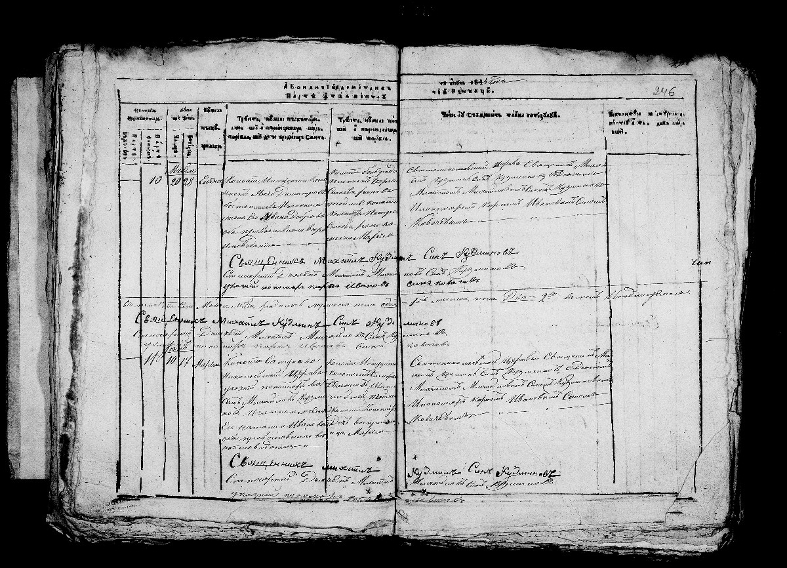
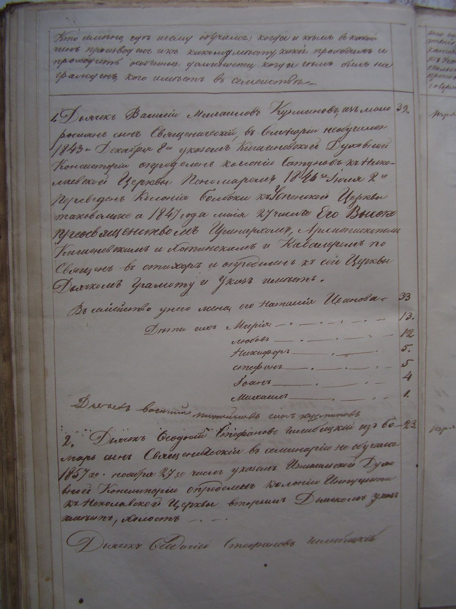
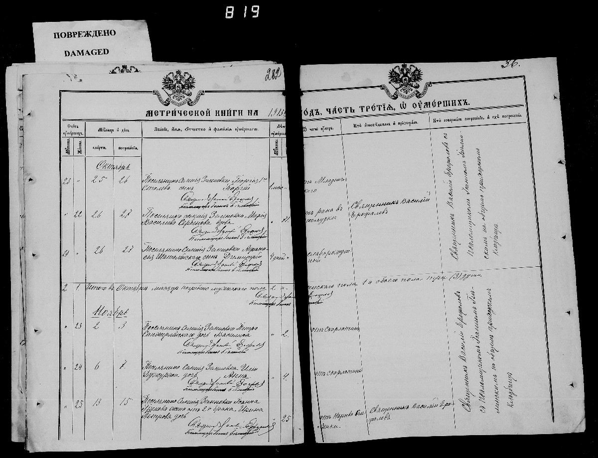

Родилась: 10.06.1844, колония Импуцита (ныне с. Владычень)
Умерла: 26.10.1913, с. Зеленое (с. Зеленовка) (от рака желудка)
Продолжительность жизни: 69
Место жительства: с. Зеленое (с. Зеленовка)
Основное занятие: колонистка - земледелец
Запись о рождении: https://www.familysearch.org/ark:/61903/3:1:3QS7-89SL-H6QG?i=416&wc=QZ4D-HVS%3A305210901%2C315232601%2C315274101%2C315703801&cc=1943763
Запись о смерти (ГАЗО: оп.3, д.908, л.326 об.) -№ 18 https://www.familysearch.org/ark:/61903/3:1:3Q9M-CSS3-1SVX-T
Отец: Кузминов Василий Михайлов
Мать: Кузминова (Ковач) Наталия Иванова
Муж: Сербинов Тодор (Федор) Тошев (Федоров)
Дочь: Стойловская (Сербинова) Наталья Федоровна
Сын: Сербинов Иван Федоров
Дочь: Сербинова Марина Федоровна
Дочь: Сербинова Ирина Федоровна
Дочь: Маврова (Сербинова) Доминикия Федоровна
Сын: Сербинов Степан Федорович
Дочь: Сербинова Анна Федоровна
Запись о рождении в МК (Метрическая книга): 10.06.1844, колония Импуцита (ныне с. Владычень). Ведомость о церкви стр. 5: 1857, колония Импуцита (ныне с. Владычень). Николаевской одноклирной колонистского водворения Кагуло-прутского округа колонии Инпуцита. страница из МК с. Зеленовка: 27.10.1913, с. Зеленое (с. Зеленовка). |